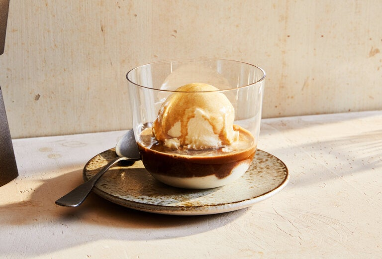

Affogato

Description
L’affogato al caffè, a dessert of gelato drowned in espresso, is “one of Italy’s most delectable modern dishes,” writes Anna Del Conte in her “Gastronomy of Italy.” The ice cream can be fior di latte, vanilla or chocolate, or whatever you like. Dulce de leche, with its caramelized milkiness, would be wonderful, as would cherry amaretto. The magic of affogato is that you get two pleasures in one: a spoonable dessert sauced with coffee, and a cream-blushed drink to chase it. The sweet ice cream and bitter coffee should enhance, not overtake each other. Like the best partners, they should meet in the middle.
Ingredients
- 1 double shot hot espresso
- 1-2 scoops of Vanilla ice cream
- Crushed pistashios
- Shaved dark chocolate
- Caramel
Steps
- Make the espresso first so it can sit while you scoop the gelato. If you don’t have a moka pot or an espresso machine, run to the nearest coffee shop.
- Add the very cold gelato to a small shallow bowl or glass that’s been chilled in the freezer until frosty and cold to the touch.
- Slowly pour the hot espresso in a thin stream directly over the gelato, draping the entire surface of the scoop with an even layer of coffee.
- Sprinkle crushed pistashios and shaved dark choclate
- Top it with caramel sauce